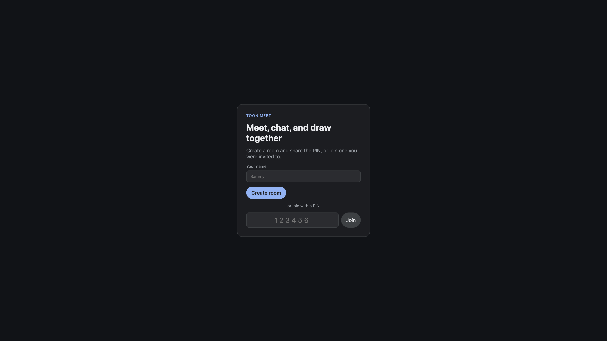

Job Game 2026
Job Game 2026
Started Snapshot
I'm Sammy Samkough, and this is my public log of Job Game 2026. I'm keeping company names, people, and links in Notion, so everyone here is a numbered alias. The counts and tables come from a snapshot of that workspace and refresh as the search moves.
Meetings
| Date | Kind | Company |
|---|---|---|
Applications
| Submitted | Company | Status | Board | Referral |
|---|---|---|---|---|
Companies
| Company | Status | Role | Meetings | First interview |
|---|---|---|---|---|
How I built this
I keep applications, companies, and meetings in Notion. This site never writes back to that workspace. It is just HTML, CSS, and JavaScript that loads a public JSON file in your browser. There is no app server sitting behind it.
A small Python script reads those three tables, strips names, people, and URLs, and hands each company a stable alias like Company 01. When a new company shows up, it gets the next number. Old numbers stay put so a row does not quietly become someone else.
GitHub Actions runs that script every day at 12:00 UTC. If anything
changed, it commits, and Netlify publishes main with no
build step. If you want to poke at the code, it lives at
ssamkough/job-game.
What I include
- Meetings from 11 Sep 2026 onward, plus anything I linked to Job Game 2026.
- Every application I logged in the Job Game 2026 table.
- Companies I last touched on or after 11 Sep 2026 that are in Finding role…, Applied, Interviewing, Take-Home, Negotating, or Interviewed.
Projects I've built while job searching
The search has a lot of waiting in it. I used some of that time to make things. Here's one.
Clock In With Toons
Video rooms with chat and a shared whiteboard. People create a room, share a PIN, meet, chat, and draw together.
